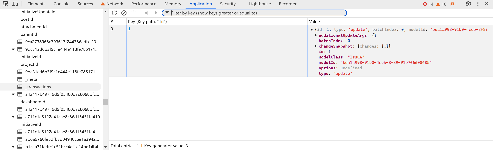
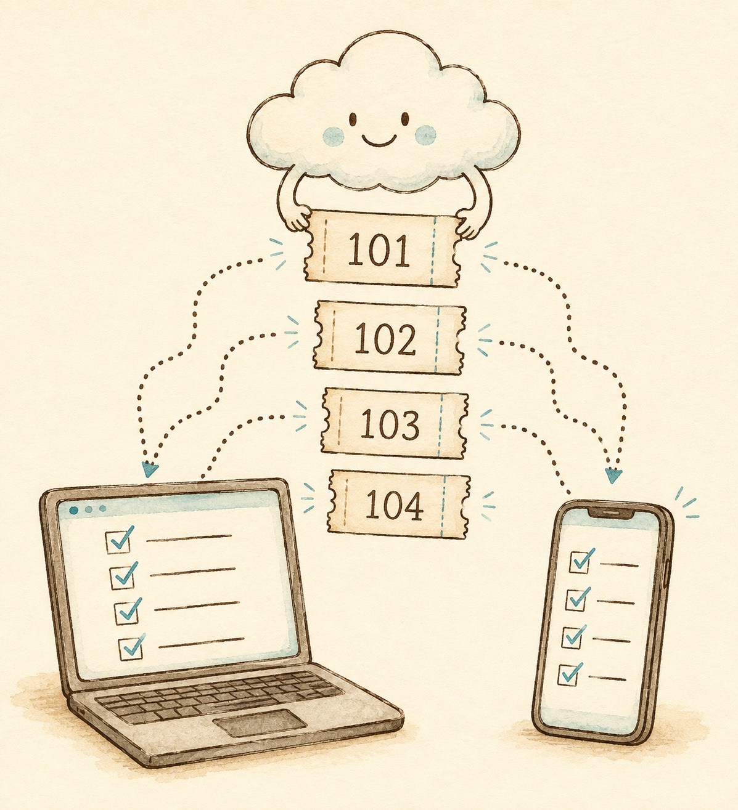
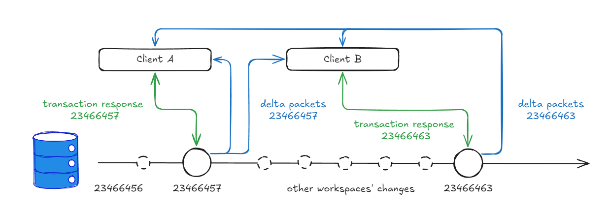
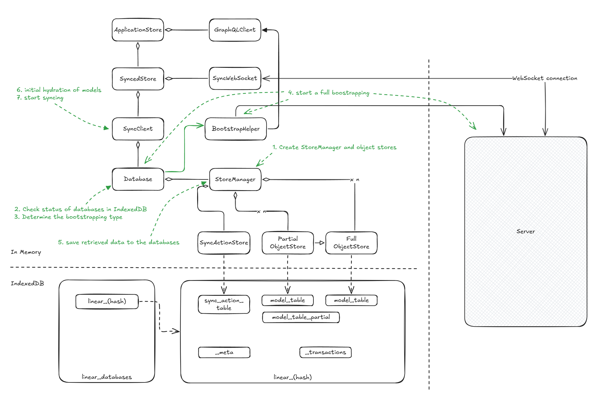
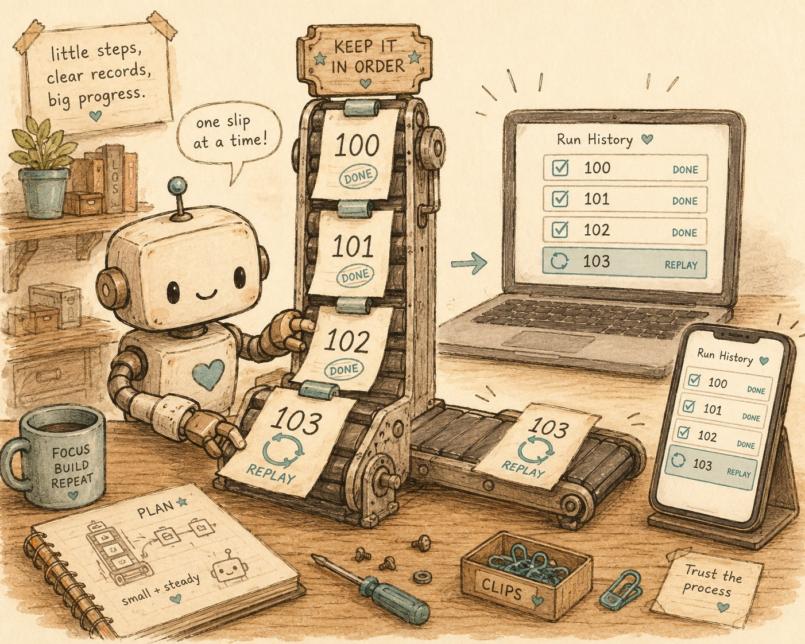

Linear 架构深读：Agent 跑了八分钟，刷新一下就没了？
聊聊 AI 时代的端云协同基本功
 木鱼拓哉2026-09SOURCE: WZHUDEV / REVERSE-LSE
木鱼拓哉2026-09SOURCE: WZHUDEV / REVERSE-LSE当我们在 AI 时代大谈 Agent、长程推理与多智能体工作流时，无数真实产品却在最基础的环节轰然倒地：Agent 跑了五分钟用户手滑刷新全丢、多设备登录状态无法对账、网络颠簸造成重复调度。通读 Linear 逆向文档，拆解它如何在端侧用本地事务队列兜住所有断点，在云端用单调递增序号统领全局对账。这是一份写给所有端侧与系统架构工程师的必修底座指南。
一、传统端侧架构的断点死穴
做端侧（Web、Desktop、Mobile）开发，我们每天都在跟以下事故搏斗：
电脑上刚改完，手机拿出来看还是旧的；地铁里断网改了几条数据，到了有网的地方一刷新全丢了；两个人同一秒改一个字段，后保存的直接覆盖先保存的，谁都没收到任何冲突提示；或者网络抖了一下，请求还在空中飞，用户急躁地又点了三次保存，数据库里多出三条重复记录。
这些问题的根源是传统架构的默认假设：状态的唯一真源只在服务端，端侧只是个无状态的薄渲染层，任何操作都必须等一次完整的网络往返。
只要网络一发生抖动，这个假设就会在端侧制造出无数个致命断点。Linear 的答案不是去祈祷网络变好，而是彻底重构了端云协同的契约：Local-First（本地优先）。浏览器本地（IndexedDB）保留完整的可读写状态副本，用户操作 0 毫秒在本地生效，网络被降级为后台的数据同步管道。代价是本地副本会分叉，需要一套严密的端云协同引擎来对账——LSE（Linear Sync Engine）就是这套引擎。
二、端云协同花名册：四个角色各管一段
面对多客户端高频修改，LSE 没有引入学术界沉重复杂的去中心化 CRDT，而是建立了一个中心化服务端仲裁下的**端云协同分工体系**。它拆解为清晰的四个角色：
- 本地事务队列（Transaction Queue）：管上行。端侧用户的所有操作打包为可逆事务，持久化并批量向云端提交。
- 全局递增序号（syncId）：管下行。服务端为全系统变更建立单调递增数轴，多端依据游标增量对账补齐。
- 意图重放机制（Rebase）：管交错。端侧本地修改未上报前如果收到云端推送，自动重放意图，化解端侧视图冲突。
- 按需加载网络（Sync Scope & Load Strategy）：管流量。精细控制元数据加载策略，几十万个对象不卡死端侧内存。
三、端侧事务队列：如何兜住 6 种操作断点？
在端侧，改个状态、拖拽一个任务，如果每次都要等几百毫秒的网络返回，一天下来光等待就要耗费几十分钟。Linear 的原则是：界面交互响应绝对不能等网络。
当用户把 Issue 负责人改成 Bob 时，端侧内存模型立刻修改，界面同步显示 Bob；同时，一条 Transaction 写入本地 IndexedDB 的 _transactions 队列，随后批量发往云端。
用户操作 ↓ 【内存模型立刻变更】 ← 用户肉眼看到的世界（0ms 乐观响应） ↓ 【Transaction 写入队列】 ← IndexedDB 本地持久化，抵御断网与闪退 ↓ 【批量上传服务端】 ← 后台静默通道，网络抖动不影响端侧继续工作
打开浏览器的 DevTools，IndexedDB 的 _transactions 表里躺着的就是这样一个真实对象：
{ id: 1, type: "update", modelClass: "Issue",
modelId: "bda1a998-…", changeSnapshot: { changes: … } }

这条队列是化解端侧断点的第一道防线。在实际生产中，一次用户点击绝对不会只有“发出去、成功了”这一条开心路径，网络环境会让现实分裂出 **6 种端侧断点走法**：
-
断网没发出去 / 网络超时丢包
结局：走 RetryTransaction 已经持久化在本地数据库，即使用户关掉标签页或重启应用也不会丢失。联网后自动重试，断网期间用户依然可以连续处理几十个任务。
-
服务端处理完了，但下行响应丢了
结局：幂等对账客户端不知道成功没，重试时带同样 Transaction ID，云端自动幂等处理，避免重复插入。
-
响应太慢，用户焦躁狂点
结局：队列合并多次对同一属性的连续修改在入队时自动合并（Debounce / Coalesce），只发最新状态。
-
请求还在空中飞，别人的修改先到了
结局：走 Rebase云端推来了别人的新状态，如果直接覆盖，用户刚改的内容会被冲掉。端侧引擎把你那条「从 Tom 改成 Bob」的事务，重新在最新基线上解释为「从 Alice 改成 Bob」，保住你的修改意图。
-
服务端权限不足或业务校验失败，直接拒绝
结局：走 Rollback这是业务层面的明确拒绝。因为本地 IndexedDB 只存储经过服务端确认的事实，乐观更新只动了内存；Transaction 内部完整记录了旧值镜像，执行 rollback 即可干净撤回内存，无需艰难修补本地数据库。
这个设计的另一大红利：因为 Transaction 按可逆（Reversible）设计，天生保存了 changeSnapshot 和旧值，Linear 的全局 Undo / Redo 功能完全是这套队列机制顺带奉送的。
四、全局单调序号：多客户端怎么增量对账？
换了一台电脑、或者手机几个星期没打开，客户端怎么知道自己遗漏了什么变更？
很多系统的做法是“重新全量拉取一次”，这在数据量大时会造成可怕的白屏和带宽压力。Linear 的端云协同核心就在于：服务端为每一个变更分配一个全局单调递增的整数：syncId。客户端只需要记住一个数字：lastSyncId。
Server: 100 ─ 101 ─ 102 ─ 103 ─ 104 ─ 105
↑
Client: lastSyncId = 100，向云端请求 101~105 的变更补课
无论离线了 5 秒还是半年，重新连网后的请求永远只有一句话：向云端拉取 lastSyncId 之后的所有变更。实时推送走 WebSocket，网络断线重连后也是靠这个序号对账补漏。

在 wzhudev 的逆向工程手绘图里，清晰记录了真实系统里的 syncId 规模——序号已经排到了 23466457：

这里有两个至关重要的架构细节：
- Delta 广播包含发起者自己：Transaction 代表客户端的**主观意图**（“我想把任务标为完成”），而 Delta 代表服务端的**客观事实**（“任务被标为完成，并触发了通知和历史动态”）。服务端执行事务时会产生额外的业务副作用，因此 Delta 会广播给全量在线客户端，发起端最终也以云端返回的 Delta 为准更新本地状态。
- 全局序号是一条全系统共用的数轴：同一个数据库里其他团队的修改也在消耗这个序号。客户端根据 Sync Scope 过滤属于自己的事件，一旦发现收到的序号跳过了数字，立刻知道中间有包丢失，迅速触发补课请求。
五、并发冲突谁说了算？云端中心仲裁
两个人同时改同一个 Issue 的标题，冲突怎么解？
Linear 的选择极其务实：以请求到达服务端的物理时间为准，采用 Last Writer Wins（后写入者胜出）。
必须强调：这里的“后”指的是**抵达服务端的绝对时间**，而不是端侧的点击时间。客户端 A 在 10:00:00 点击修改，客户端 B 在 10:00:01 点击修改，但如果因为网络原因 B 的事务先到达服务端，B 会分配到 syncId=100，A 到达后分配到 syncId=101。最终状态由 A 覆盖 B。
云端是唯一的裁判，客户端的 Rebase 只是在最终仲裁结果返回之前，让用户的本地界面不至于乱掉。这种折中对于任务协作工具而言极具智慧：字段级并发修改在现实中发生概率极低，用极简的中心仲裁避开了 CRDT 几十倍的元数据膨胀。
六、几十万个对象，如何不卡死端侧内存？
大型团队的工作区往往拥有几十万个实体对象，如果全量装进端侧浏览器，IndexedDB 和内存瞬间撑爆。LSE 在两个维度上收拢数据流向：
- Sync Scope（权限与范围隔离）：按工作区、团队、用户权限圈定同步范围，不在授权范围内的数据变更绝不下发。
- Load Strategy（加载策略）：每个模型在代码元数据中明确声明自己的加载级别。Issue 标题和状态声明为
instant（启动即同步加载），评论和历史记录声明为explicitlyRequested（点开详情页才向云端拉取），某些临时视图标记为local（纯端侧状态不下发）。

这就把 Sync Engine 与 Lazy Loading 划清了界限：同步引擎只管“哪些数据必须实时对齐一致”，而懒加载网络负责“哪些数据当下值得装进内存”。
七、AI 时代的一记警钟：同样的断点，同一副药
顺带一句延伸：这套机制虽然脱胎于日常协作软件，但长时间运行的 AI Agent 应用，恰好最欠缺的就是这套端云协同的基本功。一个复杂的 Agent 任务跑了五分钟、调度了八次外部工具，整个执行现场（状态树、工具入参及结果、推理中间态）往往只活在前端一条脆弱的长连接里。用户手滑刷新了页面，或者切到手机上去看，连接一断，现场彻底灰飞烟灭，只能重新烧着 token 从头跑起。

同样的断点病，需要的是同一副端云协同的药：别把 Agent Run 当成普通单次请求，把它改写为带全局递增序号的持久化事件流。网络断线、页面刷新、换设备登录，全凭序号增量对账，从断点处继续推进。
八、写给端侧开发工程师的工程自检清单
端云协同不是让客户端变成简单的“接口搬运工”，而是要求端侧工程师用数据库客户端的严谨度来组织前端代码。在设计协作类应用时，请对照以下 6 条基准自检：
- 交互响应是否与网络彻底解耦？用户的操作是否能在 0ms 内在内存和本地存储中生效？
- 端侧异常是否分类处理？网络失败是否走 Retry 静默排队？服务端业务拒绝是否走 Rollback 精确回滚？
- 本地队列是否落盘持久化？断网时连续操作，关掉网页或强退 App 后重开，队列里的修改还在不在？
- 并发拉取是否具备防冲能力？在本地修改未确认前收到远端推送，是否具备 Rebase 重新对齐机制？
- 多端对账是否基于递增游标？断线重连、换设备登录，是粗暴拉取全量接口，还是靠一条递增 syncId 增量补课？
- 数据加载是否做了范围与策略分级？首屏渲染是否只加载了关键字段，将巨量历史记录隔绝在按需加载之外？
优秀的端云协同架构，不是为了在完美网络下跑得更快，而是为了在现实世界充满断点、颠簸与并发的网络泥潭里，依然能保持绝对的优雅与从容。